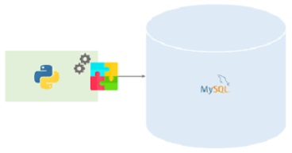

The first and foremost objective of this project is to recognize all the relevant factors which plays an important role in causing the serious accidents.
This project is divided in two stages . a) data exploration and Transformation of the variables ,b) Machine learning models.
First stage includes data extarction, data visulaization, handling noise & outliers and then performing neceassary Transformation so that
predictive models can be fitted.
Data extraction by webscrapping on accomodation website through BeautifulSoup.Extracted data of all the accomodations avaible now in B4 7DA area of Birmingham.
Extracted price, location, title of the property, availibility and description of the potential room
Stock market data extraction using web scraping(BeautifulSoup).
Us domestic flights performace dashboard on real time data through dashboard application .
Data visulaization on canada immigration and flight performace datasets using folium and plotly library in python .

Data analysis on 3 datasets(chicago census data, chickage crime and chicago public schools). Performed analysis using magic commands by connecting mySql to python .
Data cleaning of Housing Dataset using MySQL on SQL Server.
Predective modelelling on UK houses using IBM SPSS modeler.
A data analysis report on data extracted from a property website using Python and IBM SPSS Statstics .
performed key
aspects for data analysis like data
cleaning, data visualization,
data wrangling and performed predictive
modeling using essential libraries
(pandas, NumPy, matplotlib, seaborn etc).